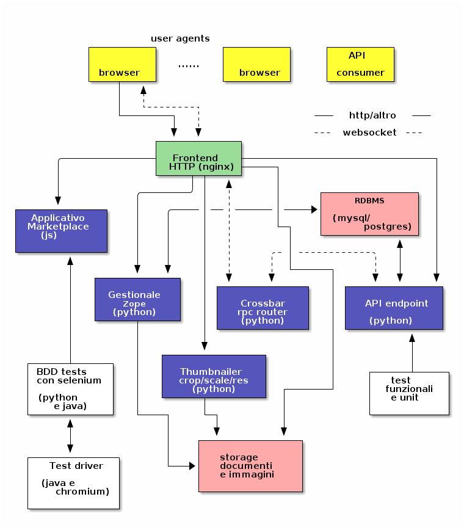

Traccia per la serata su Docker
Indice
1 Come scaricare questi appunti
Se non avete installato git installate il pacchetto "git-core" (su debian e ubuntu), quindi clonate il repo come segue:
git clone --depth=1 --recursive https://github.com/azazel75/serata_docker.git cd serata_docker firefox traccia.html
2 Introduzione ai containers
2.1 C'era una volta
Le tecnologie precedenti sono state:
- UML
- OpenVZ
- Linux VServer (2001)
(Un po' morti tutti quanti) (l'ultimo kernel Debian usabile con OpenVZ è un 2.6.32)
2.2 Nuova linfa
Dal tentativo di unificare l'interfaccia usata da questi progetti, sono stati creati dei servizi/strutture ad-hoc nel kernel. Sono:
- namespaces (anche qui):
- Mount (2.4.19);
- UTS (2.6.19);
- IPC (2.6.19-2.6.30);
- PID (2.6.24);
- NET (2.6.24-2.6.29);
- User (2.6.23-3.8);
- control groups:
- netprio, netcls;
- blkio;
- cpuset;
- ….
- root capabilities.
2.3 Nuova linfa 2
Un nuovo range di tools si sviluppa da queste basi:
- LXC: (primo commit nell'Agosto 2008-1.0 nel Febbraio 2014)
- contributori: ~ 180;
- commits: ~ 3.000;
- Docker: nato come componente di una piattaforma in competizione
con Heroku (primo commit nel Febbraio 2013-1.0 nel Giugno 2014)
- contributori: ~ 1.200;
- commits: ~ 20.000;
- LXD: ovvero LXC più user friendly e in mano a Canonical:
- machinectl/systemd-nspawn;
- rkt / appc: di CoreOS, molto legato a systemd ma con specifiche aperte;
- OpenContainers/runc: runtime di Docker e specifice di immagine appc.
2.4 Situazione del software (grossomodo)
Una volta:
- LAMP;
Ora:
- web frontend;
- api-endpoint;
- db
- queue e jobs in background;
I sistemi applicativi ora sono molto più articolati ed eterogenei.
Molteplici e diverse soluzioni riguardo all'hardware
Docker si pone verso il software in modo simile alla situazione con le spedizioni in cui molte problematiche sono state risolte con l'adozione di un contenitore standard, il container.
2.5 La situazione del packaging
PIÙ GENERICO
- vm;
- immagine LXC;
- pacchetto .deb/.rpm;
- jar/pip/…
PIÙ SPECIFICO DELL'APPLICAZIONE
2.6 Che cos'è Docker
- Un demone per gestire i container:
- usa layer sovrapposti e cow per gerstire l'fs;
- usa namespace e cgroups per isolare e controllare i processi.
- Un servizio di registry delle immagini (e dei layer) disponibili.
3 Installazione
3.1 L'avete installato?
Consiglio di installare il pacchetto fornito da Docker perché quello Debian/Ubuntu è sempre un po' indietro.
# wget -qO- https://get.docker.com/ | sh wget -qO- https://get.docker.com/ | less
Attenzione al pacchetto perché è fatto per jessie
Per modificare i parametri di avvio (da eseguire come root):
1: [Service] 2: ExecStart= 3: ExecStart=/usr/bin/docker daemon -s btrfs --icc=false -H fd://
L'opzione -s qui sopra stabilisce lo storage driver che il demone Docker userà; ne esistono diversi come:
- aufs;
- overlay;
- btrfs;
- devicemapper;
Il primo non è più disponibile sui kernel recenti, perché è stato sostituito dal secondo, che però io ho trovato non funzionare molto bene. Io attualmente uso un Linux 4.2.6 e Docker 1.9.1.
Da eseguire come root
mkdir /etc/systemd/system/docker.service.d # copiare le righe sopra nel file /etc/systemd/system/docker.service.d/params.conf # emacs -nw /etc/systemd/system/docker.service.d/params.conf systemctl daemon-reload systemctl start docker
Aggiungersi al gruppo docker
adduser <nome utente> docker
4 Uso
4.1 Primi passi
- api orientata ai processi
- simile a git per altri versi
Comandi principali:
- run
- ps
- images
- diff
- history
- commit
- push
4.2 Docker build
1: FROM debian:jessie 2: 3: ENV DEBIAN_FRONTEND=noninteractive 4: RUN apt-get update && apt-get install -y nginx 5: 6: RUN ln -sf /dev/stdout /var/log/nginx/access.log && \ 7: ln -sf /dev/stderr /var/log/nginx/error.log 8: 9: RUN echo 'Ciao corso docker' > /var/www/html/index.html 10: 11: CMD ["nginx", "-g", "daemon off;"] 12: EXPOSE 80
docker build -t azazel/nginx nginx
Allocando un porta qualsiasi
… è anche possibile farne partire più di uno
NGINX=$(docker run -dP azazel/nginx) NGINX_PORT=$(docker port $NGINX 80) curl http://$NGINX_PORT
docker inspect $NGINX | less
Occhio a
- cache e RUN con side effects e RUN dipendenti;
- ogni istruzione è un layer;
- errori nella composizione delle liste.
Dettagli sullo storage.
4.3 Debugging del build
Il build dell'immagine nginx di prima produce un output simile a questo:
.... omissis .... Step 4 : RUN ln -sf /dev/stdout /var/log/nginx/access.log && ln -sf /dev/stderr /var/log/nginx/error.log ---> Running in e17c7f93a3f1 ---> 8a13ac3dd1ed Removing intermediate container e17c7f93a3f1 Step 5 : RUN echo 'Ciao corso docker' > /var/www/html/index.html ---> Running in 6c955504727d ---> 6211edd8a0e3 Removing intermediate container 6c955504727d Step 6 : CMD nginx -g daemon off; ---> Running in 8d4b89b54cac ---> cf34fefadc18 Removing intermediate container 8d4b89b54cac Step 7 : EXPOSE 80 ---> Running in 5f8f2a823ae5 ---> 7b811ea66663 Removing intermediate container 5f8f2a823ae5 Successfully built 7b811ea66663
Se uno step dovesse fallire, è possibile eseguire un debugging eseguendo bash nell'ultimo step valido. Ad esempio se lo step 5 qui sopra fosse fallito potrei "entrare" nel container usato per eseguire il comando associato con:
docker run -ti 8a13ac3dd1ed bash
4.4 links
Creo un altra immagine per usarla come client
1: FROM debian:jessie 2: 3: ENV DEBIAN_FRONTEND=noninteractive 4: RUN apt-get update && apt-get install -y curl 5: 6: ENTRYPOINT ["curl"]
docker build -t azazel/curl curl
docker inspect $NGINX | grep IPAddress docker run --rm azazel/curl
docker run --rm --link $NGINX:nginx azazel/curl http://nginx docker run --rm --link $NGINX:nginx --entrypoint /bin/bash -ti azazel/curl
4.5 volumi
1: FROM debian:jessie 2: 3: ENV DEBIAN_FRONTEND=noninteractive 4: 5: RUN mkdir -p /opt/volume 6: VOLUME ["/opt/volume"] 7: 8: CMD ["tail", "-f", "/dev/null"]
docker build -t azazel/data data_container
docker create -v "voldata:/opt/volume" --name data azazel/data
docker run --volumes-from data -ti --rm debian:jessie bash
4.6 Compose
installazione
- installare libyaml-dev
python3 -m venv env source env/bin/activate pip install docker-compose
cd example-voting-app/vote-apps docker-compose up
4.7 Compose-complex

5 Dove trovre risorse
Una ottima lista di progetti e risorse e strumenti legati a Docker.